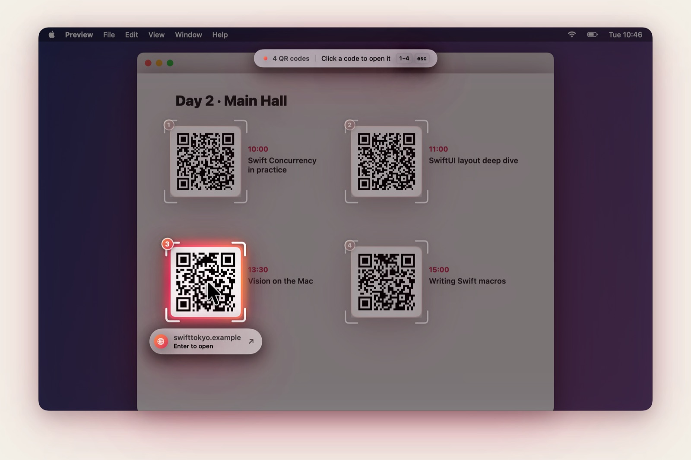

QRedirect
When a presenter puts up a QR code, press Option–Q, preview its destination, and open the link on the Mac you’re already using.
Inside the app
Scan the screen
Start a scan from the menu bar or with the keyboard shortcut. Codes on your connected displays appear highlighted.
Choose a destination
Hover to preview a web address. If several codes are visible, use the numbered highlights to pick one.
Copy what you need
Web links open in your browser. Plain text and Wi-Fi passwords can go straight to the clipboard.
